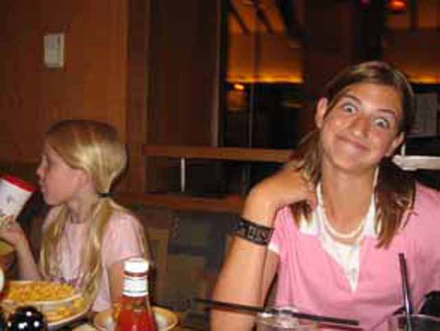
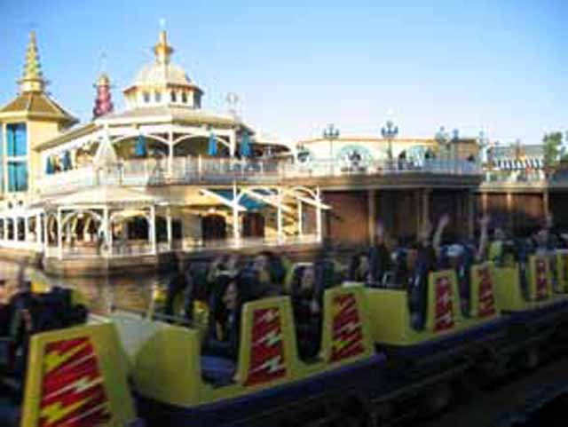
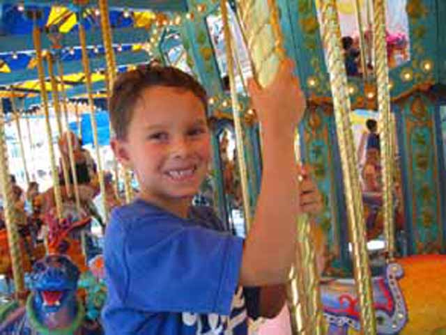

Disneys 50th Anniversary
We decided to go to Disneyland for the 50th Anniversary. (We mostly spent our time at Califronia Adventure though.)
Their new Dark ride Buzz Lightyear Astro Blasters was really fun and a great addition to Disneys Dark Ride Collection!
 This trash can rolled over to us, began singing for us and rolled away!
This trash can rolled over to us, began singing for us and rolled away!
Run! Run before Alisa shoots you! Run!!!
Allie and Ariana have to get their exersice for the day!
Yo Dude! Climb that thing! Climb the Matterhorn!

Time for lunch at Storytellers.
Maliboomer is a really fun ride. You get lots of airtime at the top of the tower.
 California Screamin. So common, yet so awsome! You get a lot of airtime on all of the hills, the loop is strong and the line moves very fast! I rank this #7 on my Top 10 list!
California Screamin. So common, yet so awsome! You get a lot of airtime on all of the hills, the loop is strong and the line moves very fast! I rank this #7 on my Top 10 list!

The launch however is dissapointing. I'm not saying it sucks! I'm saying that Xcelerator, Speed the Ride, and Montezoomas Revenge are ALL stronger than California Screamin.

Mikey is having fun on King Tritons Carousel!
We had to have an Ice Cream break due to how hot it was today!
Heres a construction photo of Monsters Inc. for you dark ride enthusiasts.
Celeste decided to try Tower of Terror for the first time. It turns out she hated it! Thats a shame because Tower of Terror ROCKS!
 We didn't get too wet on Grizzly. (Which would have been a blessing in the weather!)
We didn't get too wet on Grizzly. (Which would have been a blessing in the weather!)
The new Parade was really good!
Heres another picture of the 50th Anniversary Parade to end the update.
Home